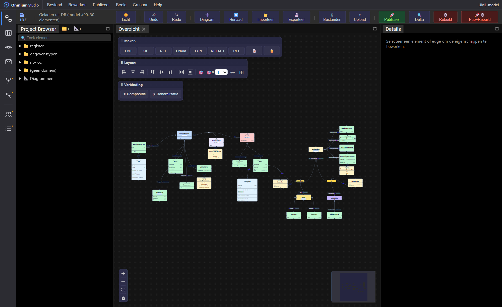

De data-laag is de stabiele onderlaag: gegevensstructuur en basisgegevens, vastgelegd met twee tijdsdimensies. Niet alleen wát geldt, maar ook wannéér het is vastgelegd — met een audit-trail die je foutloos kunt teruglezen.
Elk gegeven kent twee onafhankelijke tijdlijnen. Daardoor kun je tijdreizen: de toestand van het register opvragen op elk gewenst moment, formeel én materieel.
Wanneer is iets vastgelegd? Velden opvoer/afvoer. Je reist alleen naar het verleden — registreren in de toekomst kan niet.
Wanneer geldt iets in werkelijkheid? Velden aanvang/einde. Hier reis je vooruit én achteruit (bv. een geplande verhuizing).
Eén registratie bundelt wijzigingen; elke wijziging voert representaties op of af. Formele tijdstippen leven in een aparte wijzigingen-tabel.
Mits dezelfde architectuur kun je zelfs over meerdere registers heen tijdreizen — cruciaal voor een naadloze audit-trail.
opvoer/afvoer op een record zijn de afgeleide actuele situatie na verwerking van alle wijzigingen tot het heden.v06 scheidt het stabiele anker van de veranderlijke inhoud, zodat correcties netjes geversioneerd zijn:
opvoer/afvoer.ent_id, rel_id, versie); correcties en inhoudelijke wijzigingen leven hier.IsMaterieel.
Het model is opgedeeld in domeinen met een eigen prefix en codegen-uitvoer. Vanuit het model genereert het systeem werkende code én — waar gewenst — volledige registers.
Register, NL Personen/Locatie (np-loc), referentie-modellen, portfolio en configuratie — elk met eigen prefix.
Referentielijsten (en straks configuratiedata) als bitemporele onderlaag, herbruikbaar als veldtype.
Per domein worden Go-structs, registries en methodes gegenereerd; rebuild bouwt de API én het register zelf.
Consistente, herbouwbare registers, rechtstreeks uit het canonieke model — de bestaansreden van de IDE.
Open de UML-activiteit en bekijk het bitemporele np-loc-model.
Open Omnium Studio →